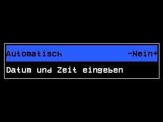

Datum und Uhrzeit einstellen
Stellen Sie die Uhr des Hectare Mini von Hand ein, oder lassen Sie sie mit einer Zeitzone dem GPS-Empfänger folgen.
Das Panel versieht Beginn und Ende der Arbeit auf jedem Feld mit seiner Uhrzeit und zeigt die Zeit auf dem Startbildschirm an. „Datum/Zeit ändern“ finden Sie im Menü „Einstell.“ auf der Ebene „Fahrer“. Was sich öffnet, hängt vom Punkt „GPS“ des Profils ab.
Mit GPS im Profil

- „Automatisch“ – ob die Uhr dem GPS-Empfänger folgt.
- Sein Wert, hier „Nein“. Ändern Sie ihn mit „PLUS“ / „MINUS“.
- „Datum und Zeit eingeben“ – öffnet das Menü zum Einstellen der Uhr von Hand. Sichtbar, solange „Automatisch“ auf „Nein“ steht.
- „Automatisch“ auf „Ja“: Die Uhr übernimmt die Zeit vom GPS-Empfänger. Statt „Datum und Zeit eingeben“ erscheint der Punkt „Zeitzone“ – stellen Sie Ihre Abweichung von UTC mit „PLUS“ / „MINUS“ ein, von −12:00 bis +14:00 in ganzen Stunden.
- „Automatisch“ auf „Nein“: Wählen Sie „Datum und Zeit eingeben“ und drücken Sie „MENU“, dann machen Sie wie unten ab Schritt 2 weiter.
Von Hand
„MENU“ → „Einstell.“ → „Datum/Zeit ändern“, drücken Sie „MENU“. Ohne GPS im Profil öffnet sich das Menü mit „Jahr“, „Monat“, „Tag“, „Stunden“, „Minuten“, „Sekunden“ und „Einstellen“.
Wählen Sie einen Punkt mit „UP“ / „DOWN“ und ändern Sie ihn mit „PLUS“ / „MINUS“. „MENU“ auf einer Zahl – bei allen Punkten außer „Monat“ – öffnet das Zahlenfeld.
Stellen Sie alle sechs Punkte ein. Nach einer Änderung des Monats wird ein Tag, den der Monat nicht hat, auf dessen letzten Tag zurückgesetzt.
Wählen Sie „Einstellen“ und drücken Sie „MENU“. Die Uhr übernimmt das neue Datum und die neue Uhrzeit, und das Menü, von dem Sie kamen, kehrt zurück.
„BACK“ verlässt das Menü, ohne die Uhr zu ändern. Jeder Punkt öffnet sich mit dem aktuellen Datum und der aktuellen Uhrzeit; Sie ändern also nur, was falsch ist.
Ihre Maschine tut etwas, das diese Seite nicht beantwortet? Schreiben Sie an support@agriwelt.com — es antwortet ein Ingenieur.